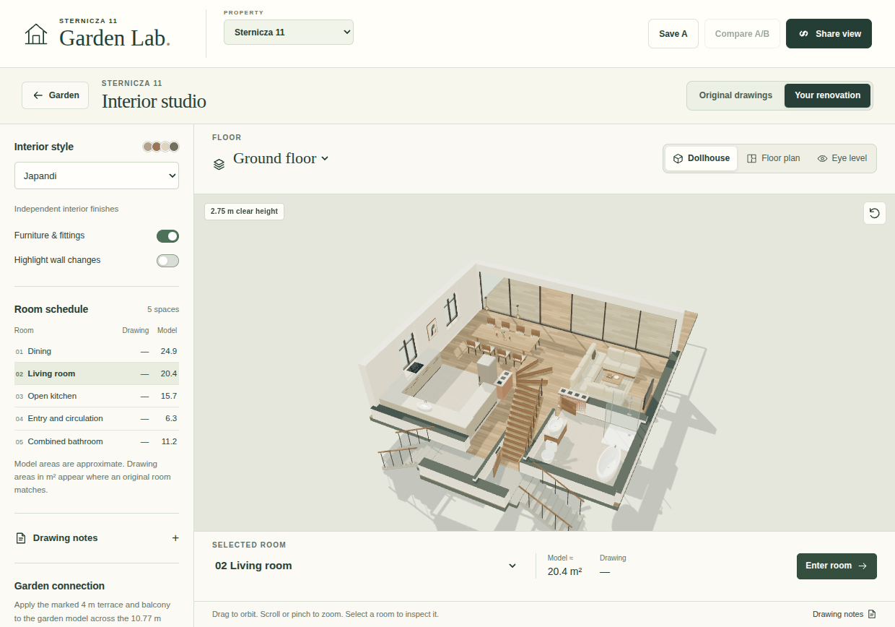
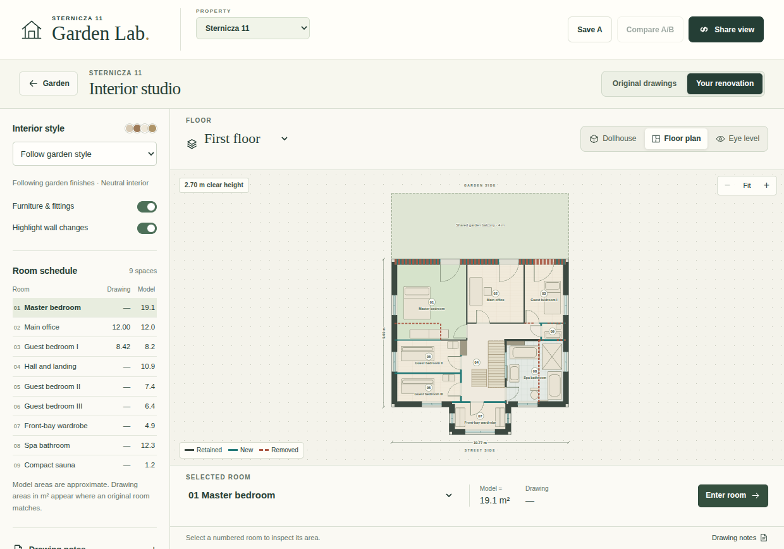
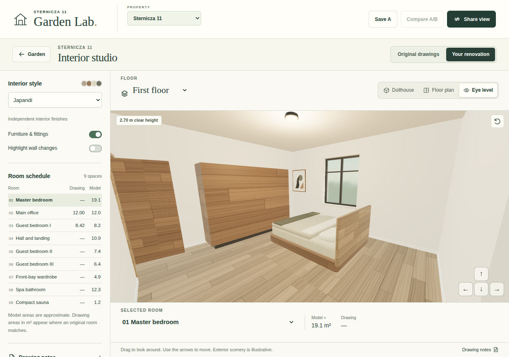
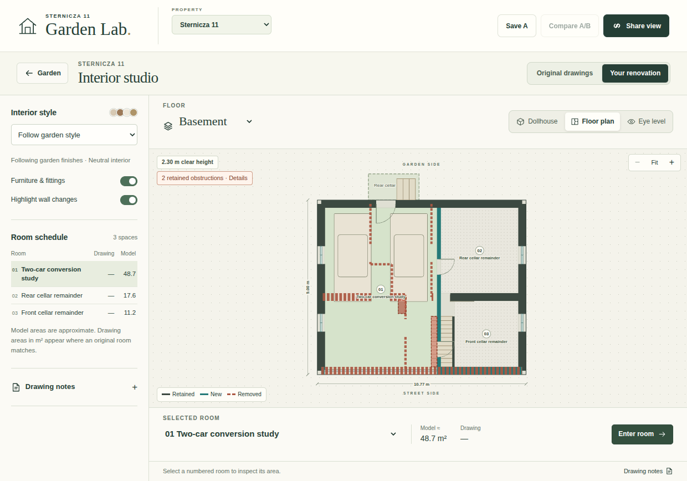
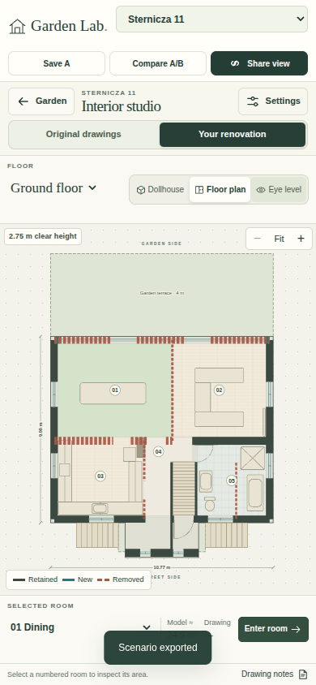
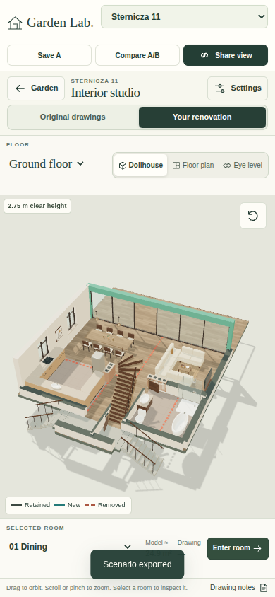

Sternicza 11 interior studio
Four floors reconstructed from the homeowner’s historical drawings, with the marked renovation available room by room. Compare the original partitions, inspect furniture at eye level and connect the proposed garden doors to the outdoor model.

Using the studio
Open Interiors for Sternicza 11. Original drawings displays the historical scheme. Your renovation follows the owner’s coloured markups, with fitting sizes and undimensioned details reconstructed for comparison.
- Choose the basement, ground floor, first floor or attic. Use a numbered room in Floor plan or its row in the room schedule to select it.
- Choose Dollhouse for a cutaway or Eye level to explore the selected room. Toggle furniture and highlight wall changes in the inspector.
- Follow the garden finish or choose an independent interior style. Use Apply terrace & balcony to transfer the marked deck dimensions and openings to the garden.
The marked renovation
Ground floor and garden
The two rear rooms connect to the front-left kitchen. A long table sits on the left, while U-shaped seating faces the right-wall TV. The former right kitchen and bath combine into an approximately 11.2 m² bathroom. A 9.97 m lift-and-slide opening faces the 4 m terrace.
Bedrooms and spa
Three rear rooms reach a shared 4 m balcony. Two front guest rooms fit compact singles in approximately 7.4 and 6.4 m², with a separate wardrobe in the bay. The source bay measures 3.07 × 1.68 m inside; the proposed partition leaves 3.07 × 1.59 m, approximately 4.88 m². The 12.3 m² spa study includes a compact whirlpool, soaking bath and two-person shower. The sauna has about 1.28 × 0.94 m inside, roughly 0.30 m short of the depth of a compact two-person cabin benchmark.




What the drawings establish
| Source | Dimension or observation |
|---|---|
| Floor plans | 10.77 × 9.00 m main block. The upper street bay has 3.55 m of masonry width, 3.07 m clear inside and 3.75 m including the separately marked external insulation. |
| Section I–I | Cellar floor −2.00 m, ground ±0.00 m, first floor +3.05 m and upper ceiling +5.75 m. Clear heights are 1.70, 2.75 and 2.70 m. The cellar’s 1.70 m is internal floor-to-slab clearance; exterior grade is a separate, unresolved reference. |
| Roof section | 30° pitch, +8.75 m ridge and +9.60 m chimney reference. Truss webs and roof build-up reduce attic headroom. |
| Floor structure | Existing timber floor and reinforced-concrete ring beams. The sheet specifies concrete B15 and steel A0. |
| Marked decks | 10.77 × 4.00 m each, giving 43.08 m² at the ground terrace and upper balcony. |
Interior construction and furnishing costs are not included in the garden budget. The detailed review covers the eight photographed sheets, two renovation markups, transcribed areas, fittings and remaining uncertainties. Read the drawing review.
The two-car cellar study
The historical cellar contains four earth-floored stores and a brick-floored corridor. The neutral original view preserves those different surfaces. The separate outbuilding elevation depicts two garage portals. Inside the house, the conversion study places two Cybersters side by side across 5.80 m. The default approach intersects the three-flue stack and the edge of the cellar stair. A 2.30 m clear garage below a 0.30 m floor zone places its floor at −2.60 m, requiring 0.60 m of lowering relative to the documented cellar. At the selected 0.30 m slab allowance, the front-yard-only ramp produces modelled underside contact. Extending the ramp inside the house restores the selected car-clearance reserve, while the retained stair and flue still obstruct its route. Vehicle clearance, retained structure and footing depth each need their own assessment.

Mobile views




Validation record
616 unit, geometry and state checks passed. 63 completed browser check groups passed (interior: 8, studio: 12, garden: 35, refinements: 8). All four browser reports identify release 1.26.0 and contain no recorded errors.
Tested source 5c03e6a8e22f5e8abcc1923227aee9ba57b0575d
Merged source 0f6ac891dbfe5320d9f31c62969a6d374617c5a3
GitHub Actions run 44427544268. Camera changes settle to an idle renderer; the browser checks include room entry, style switching, saved designs, garden handoff and mobile controls.